A frame of the finished demo: Blender render, composited in After Effects.
Cast. Stage. Attack. Burn.
Start with the theory deck. Do Canyon Dogfight first: this shot reuses its paths, lasers and passes.
My supports
Turn on any help you want. Your teacher may have set some for you. They change how the guide helps, not what is assessed.
Shot brief
Hold the barricade. Lose it.
Deliver an 8.5-second shot: a squad holds a rock barricade and fires on an approaching fighter, which strafes them in the last two seconds. Then make the change your director asks for.
You will hand in
trooper.blend with five named actions
A screenshot of one trooper’s NLA strips
The finished MP4 and the director’s version
A three-decision explanation and full credits, including the character’s licence
What your teacher gives you
The Canyon_Dogfight folder from the last tutorial (canyon, PewPew add-on, explosion clips) plus the blaster model and the dirt-charge clips. The explosion clips are licensed stock footage: use them in your project, but do not upload the clips themselves anywhere.
Battle scenes are built from a small library of motion-captured actions reused across many characters, then finished with filmed pyrotechnic elements. Crowd artists, FX artists and compositors each own one layer of what you build here.
Knowledge first
Why this works.
Open the theory deck for the narrated version with checkpoint questions. In short:
Reuse, with permission
A downloaded character and motion-captured actions, used within their licence and credited.
Actions and strips
Actions are clips; the NLA editor sequences, repeats and blends them, differently for each trooper.
Tension, then release
Six seconds of waiting make two seconds of attack land. The camera stays with the squad.
A blast is layers
Light, a thrown body, debris, then filmed dirt and fire.
Design principles in the shot
Rhythm: hits three frames apart. Contrast: white armour against dark rock. Emphasis: the camera holds where the damage is.
What this assesses
Skills you will show.
Skill (ID)
Where you show it
3D character animation (rigs, Mixamo, mocap) · AN-RIG-01
Steps 1–3, 5, 6
Acting, expression and exaggeration · AN-ACT-01
Step 6
Timing and spacing · AN-TIM-01
Steps 6–8, 10
Staging, shot design and film grammar · AN-STG-01
Steps 7, 8
Keyframes and Graph Editor (3D) · BL-KEY-01
Steps 7, 8, 10
Integration: grounding, light and colour match · VP-INT-01
Step 11
Critique and refinement · GD-CRIT-01
Step 12
Primary achievement evidence: the director’s change (step 12). Guided steps, recall questions and supports are recorded separately from achievement. Shot-library option in sprint mm12-26-s08. Skill IDs AN-, BL- and VP- were approved on 3 Oct 2026 and are being registered.
Session A · Lesson 1 · Sketchfab, Mixamo, Blender
Get a character and make it move.
A downloaded character, five motion-captured animations, and one clean Blender file to reuse.
TODAYTheory deck (12 min), find a character (15 min), Mixamo animations (20 min), import and name the actions (23 min).
01
Find a character you are allowed to use
IN SHORTSearch; Downloadable; check shape and licence; record the credit; download FBX.
READ ALOUD
DOCUMENT: Your browser SELECT: A rigged or T-pose humanoid on Sketchfab TOOLS / ROUTE: sketchfab.com · Search · Downloadable filter · Licence · Download 3D Model › FBX
Go to sketchfab.com and sign in with your school account. Search for a character, for example soldier rigged or robot t-pose. Turn on the Downloadable filter.
Open a model. Check three things: it is one human-shaped figure, arms away from the body, and under about 50,000 triangles (Model Inspector).
Scroll to the licence. CC0 or CC Attribution are fine. Write the artist’s name and the licence in your credits file now.
Click Download 3D Model and choose FBX (or the original format if FBX is not offered). Unzip it into a folder called character.
The finished demo: Blender passes composited in After Effects (8.5 seconds).
Action by action: what to click (orange boxes), and what you should see
1A model page. The Download 3D Model link is under the viewer.
Click
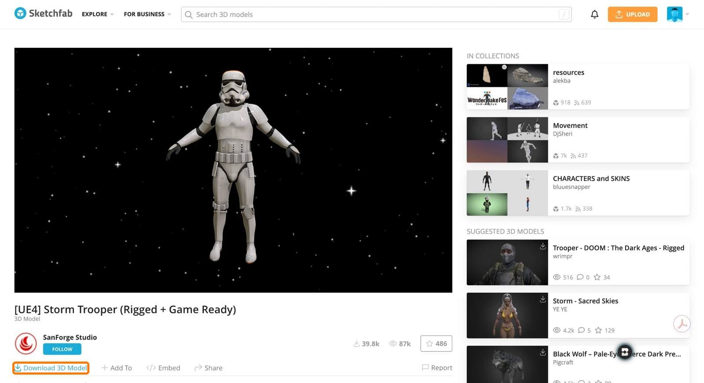
Box: Download 3D Model.
What went wrong when we built the demo: the trooper in our demo turned out to be extracted from a commercial game: its files still point at the game’s folders. We kept it for the classroom demo only. For your own film, choose a model the artist made.
STEP CHECKLIST
GLOSSARY
Rigged: Has a skeleton inside for animation
T-pose: Standing with arms straight out, ready for rigging
WHYReusing a character is normal industry practice; knowing whether you are allowed to is part of the job.
CHECKA character folder with an FBX and its textures, and one line in your credits file.
FIXMixamo will reject it later? Characters with tails, wings, capes or four legs do not auto-rig. Pick a plain humanoid.
WORKED EXAMPLE · DIFFERENT OBJECTThe same check applies to any downloaded asset: a car, a building, a sound effect.
STRETCH (AFTER THE CHECK PASSES)Find a second character for the survivors, so the squad is not identical.
Method basis: S1. Values and sequence are authored for this project.
02
Rig it and pick five animations in Mixamo
IN SHORTUpload; idle With Skin; four more Without Skin at 24 fps; try the sliders; file them.
READ ALOUD
DOCUMENT: Your browser SELECT: Your character on mixamo.com TOOLS / ROUTE: Upload Character · search · sliders · Download (FBX Binary, With Skin / Without Skin, 24 fps)
Go to mixamo.com and sign in. Click Upload Character and choose your FBX. If it asks, place the markers on chin, wrists, elbows, knees and groin, then Next.
Search rifle aiming idle. Click it: your character plays it. Click Download: Format FBX Binary (.fbx), Skin With Skin, Frames per Second 24. Save as Rifle Aiming Idle.fbx.
Search and download four more, each Without Skin, 24 fps: Rifle Run (tick In Place), Firing Rifle, Hit Reaction, Rifle Death (or Dying Backwards).
Before each download, try the sliders: Overdrive makes it faster, Character Arm-Space stops arms cutting through the body.
Put all five FBX files in your character folder.
Action by action: what to click (orange boxes), and what you should see
1An animation playing on your character.
Click
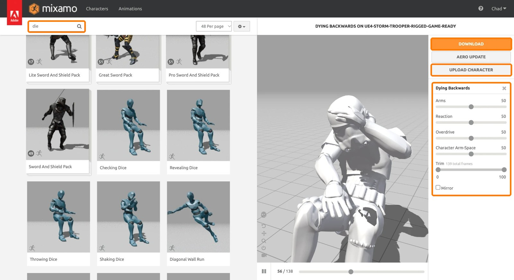
Boxes: the search box, Download and Upload Character, and the animation’s sliders.
STEP CHECKLIST
GLOSSARY
Rig: The skeleton that moves a character
In Place: The character animates without travelling forward
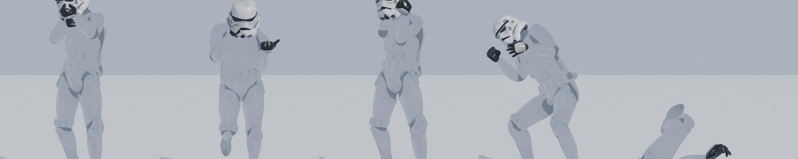
The demo trooper in each of the five actions: Idle, Run, Fire, Hit, Death.
WHYMixamo’s animations are motion capture from real performers, so the weight and timing are right. You are choosing and directing a performance, not making one from nothing.
CHECKFive FBX files: one about 2 MB (with skin), four small ones (without).
FIXUpload fails? The model is not humanoid or has several separate parts. Try another character.
WORKED EXAMPLE · DIFFERENT OBJECTAny game or film crowd is built from a small library of actions like this.
STRETCH (AFTER THE CHECK PASSES)Download two different deaths so the squad does not all fall the same way.
Method basis: X1. Values and sequence are authored for this project.
03
Import into Blender and name the actions
IN SHORTImport With Skin; rename; import each Without Skin; rename its action, shield, delete the armature; test; fix textures; save.
READ ALOUD
DOCUMENT: New Blender file trooper.blend SELECT: The five FBX files TOOLS / ROUTE: File › Import › FBX · Action Editor · F2 · shield (Fake User) · Shader Editor
New Blender file. Delete the cube. File › Import › FBX (.fbx) › Rifle Aiming Idle.fbx. Rename the armature Trooper (F2).
Change the Timeline to a Dope Sheet, and its mode to Action Editor. Rename the action Idle and click the shield so it is kept.
Import Rifle Run.fbx. It brings a second armature with one action: select it, rename the action Run, click the shield, then delete that extra armature (X). Repeat for Fire, Hit, Death.
Select Trooper. In the Action Editor’s action menu pick each action in turn and press Space: your one character plays all five.
Material Preview (Z). If the character is pink or white, open each material in the Shader Editor and load the right image into the Image Texture node from the textures folder. Save as trooper.blend.
Action by action: what to click (orange boxes), and what you should see
1File › Import › FBX.
Click
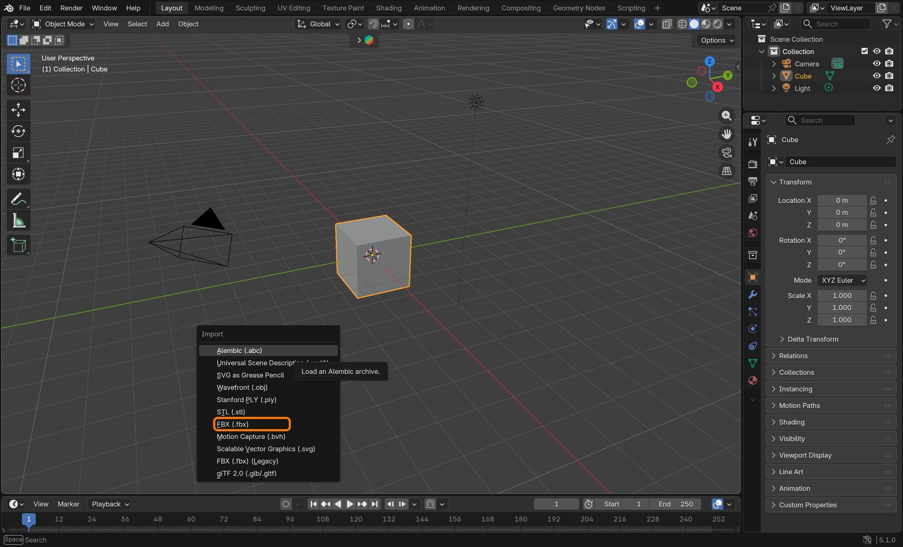
Box: FBX (.fbx) in the Import menu.It should look like this
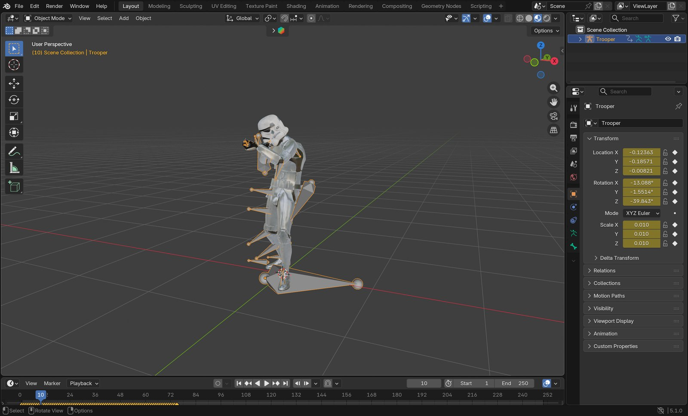
The trooper imported and textured, in its Idle pose.
2Dope Sheet › Action Editor.
Click
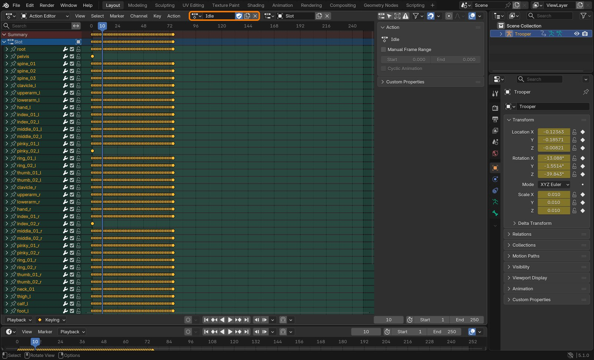
Box: the action name (Idle). The orange diamonds are Mixamo’s keyframes, one row per bone.
Object
Setting
Value
Idle
length
75 frames
Run
length
17 frames (loops)
Fire
length
7 frames (loops)
Hit
length
56 frames
Death
length
92 frames
What went wrong when we built the demo: the FBX arrived with texture paths pointing at the original artist’s computer, so the character imported white. Loading the images from the textures folder by hand fixed it.
STEP CHECKLIST
GLOSSARY
Action: A named block of animation
Fake User: Keeps data in the file even when nothing uses it
WHYOne clean file with one character and named actions is an asset you can append into any scene. That is how studios keep character libraries.
CHECKOne armature called Trooper; five actions named Idle, Run, Fire, Hit, Death; textures showing.
FIXAn action vanished after saving? You forgot the shield (Fake User) before deleting its armature.
WORKED EXAMPLE · DIFFERENT OBJECTA walk, a wave and a sit for a background extra are collected the same way.
STRETCH (AFTER THE CHECK PASSES)Scrub each action and write down its length in frames; you need those numbers next lesson.
Method basis: B1. Values and sequence are authored for this project.
Session B · Lesson 2 · Blender
Build the squad and the barricade.
Twelve troopers behind a rock wall, each firing on their own timing.
TODAYRecall (5 min), barricade (15 min), append and arm the trooper (20 min), squad and strips (30 min).
04
Open the canyon and build a barricade
Recall first (from last lesson, no peeking):
What is the difference between With Skin and Without Skin, and which one did you use four times?
What does the shield (Fake User) do for an action?
Which licence lets you use a model if you credit the artist?
Say or write your answers, then check them against your file.
IN SHORTSave a copy; mark the spot; duplicate boulders into a 20 m wall; vary them; clear the ground.
READ ALOUD
DOCUMENT: canyon_start.blend → strafe_YOURNAME.blend SELECT: Boulders already in the canyon TOOLS / ROUTE: File › Save As · Shift+D · G R S · Shift+A › Empty
Open canyon_start.blend and Save As strafe_YOURNAME.blend. Set the timeline End to 204. Delete TIE fighter and Rescuer X-wing (select each in the Outliner, right-click › Delete Hierarchy).
Fly along the canyon floor to a straight section about 700 m in. Add an Empty there named Squad: this is your mark.
Select any boulder. Shift+D to duplicate, move it to the mark, scale it to about chest height (1.2–1.5 m tall) and stretch it sideways.
Repeat until eleven rocks make a wall about 20 m wide across the canyon, 3 m in front of the mark. Rotate each one differently. Leave two smaller rocks in the middle as a gap to fire through.
Clear loose boulders from the 20 m behind the wall so the squad has room.
Action by action: what to click (orange boxes), and what you should see
1The barricade and squad from above and behind, in Solid view.
Click
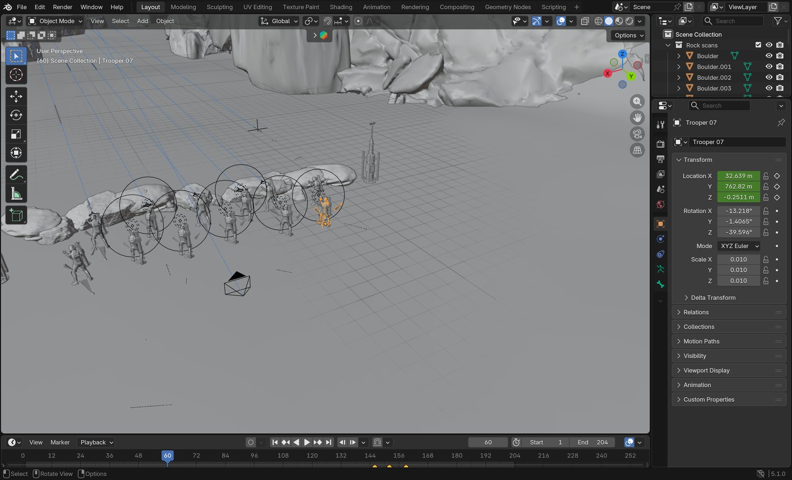
Twelve troopers in two rows behind the rock wall; the camera sits behind them.
STEP CHECKLIST
GLOSSARY
Duplicate: Shift+D: a copy you can move
Snap: Makes objects stick to surfaces as you move them
WHYA barricade gives the troopers a reason to be there and gives the blast something to destroy.
CHECKA rough, chest-high rock wall across the canyon floor with clear ground behind it.
FIXRocks floating or sunk? Turn on Snap (magnet icon) › Face, and move them again.
WORKED EXAMPLE · DIFFERENT OBJECTSandbags, crates or wrecked cars make barricades the same way.
STRETCH (AFTER THE CHECK PASSES)Import Vaporator.obj from the Star Pack and stand one at each end, 4 m tall.
Method basis: H1. Values and sequence are authored for this project.
05
Append the trooper, give it a blaster, make a squad
IN SHORTAppend the trooper; import the blaster; Ctrl+P › Bone on hand_r; duplicate into two rows of six; vary them.
File › Append › trooper.blend › Object: select Trooper and its three meshes. Move the Trooper armature to the mark, behind the wall, facing down the canyon. Scale 0.011 (about 1.8 m tall).
File › Import › FBX › DC-15S.fbx (the blaster). Scale it to about 0.55 m long.
Select the blaster, Shift+click the Trooper armature, switch to Pose Mode, click the right hand bone (hand_r), then Ctrl+P › Bone. Back in Object Mode, set the blaster’s Location to 0 and rotate it until it sits in the hand along the forearm.
Select the armature, its meshes and the blaster. Shift+D and move 2.5 m sideways. Make six across, then a second row of six 2.6 m behind, offset by 1.2 m.
Nudge each one a little and turn each a few degrees so no two match.
Action by action: what to click (orange boxes), and what you should see
1A trooper with the blaster parented to the right hand.
Click
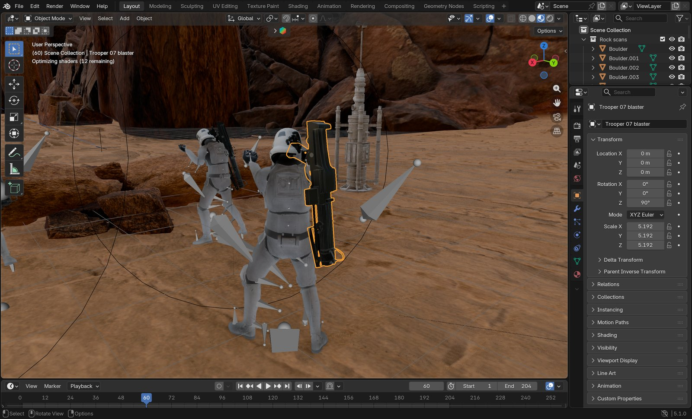
The blaster selected (orange outline), held in the hand.
Object
Setting
Value
Trooper
Scale
0.011
Blaster
Parent
Bone: hand_r
Squad
Spacing
2.5 m across, 2.6 m between rows
STEP CHECKLIST
GLOSSARY
Append: Copy something from another .blend into this one
Bone parent: An object carried by one bone of a skeleton
WHYParenting to a bone makes the blaster follow the hand through every animation. Duplicating a finished character is how a crowd starts.
CHECKTwelve armed troopers in two loose rows behind the barricade, all facing down the canyon.
FIXBlaster stays behind when the trooper animates? It is parented to the object, not the bone: redo with Ctrl+P › Bone in Pose Mode.
WORKED EXAMPLE · DIFFERENT OBJECTA sword, a phone or a coffee cup is attached to a hand the same way.
STRETCH (AFTER THE CHECK PASSES)Give two troopers a different scale (0.0105 and 0.0115) for height variety.
Method basis: B2. Values and sequence are authored for this project.
06
Give each trooper a performance with NLA strips
IN SHORTNLA editor; Idle at 1 (Hold); Fire repeated from a staggered frame; Death at the hit frame for seven; Hit then Run for five.
READ ALOUD
DOCUMENT: strafe_YOURNAME.blend SELECT: One trooper at a time TOOLS / ROUTE: Editor type › Nonlinear Animation · Shift+A › Add Action Strip · N › Strip
Change the Timeline to Nonlinear Animation and click the filter Only Show Selected. Select one trooper armature.
Frame 1: Shift+A › Idle. A strip appears. In N › Strip set Extrapolation Hold.
Go to a frame between 8 and 30 (different for each trooper). Click an empty track above and Shift+A › Fire. In N › Strip › Action Clip set Repeat so it runs to about frame 150 (for example 20 repeats), Blend In 4.
Decide who is hit: seven troopers, at frames 146, 149, 152, 155, 158, 161, 164, working across the squad. For each, add a Death strip at that frame (Blend In 2, Hold) and end their Fire strip there.
The other five survive: add a Hit strip at a frame between 150 and 162, then a Run strip 16 frames later (Repeat 6).
Action by action: what to click (orange boxes), and what you should see
1The NLA editor for one trooper that gets hit.
Click
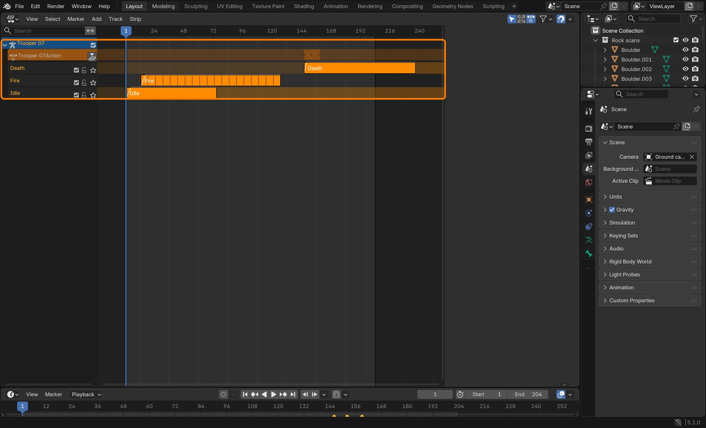
Box: Idle from frame 1, Fire repeated from frame 12, Death at frame 146.
Object
Setting
Value
Idle
start / extrapolation
1 / Hold
Fire
start / repeat / blend in
8–30 / to the hit / 4
Death
start / blend in
hit frame / 2
Hit frames
seven troopers
146, 149, 152, 155, 158, 161, 164
STEP CHECKLIST
GLOSSARY
Strip: An action placed on the NLA timeline
Repeat: How many times a strip loops
Blend In: Frames taken to fade a strip in
WHYStrips let you direct twelve performances with a few drags each. Staggered start frames are what make a crowd look like individuals.
CHECKPlay from frame 1: the squad aims, starts firing one by one, then seven fall in sequence and five flinch and run.
FIXA trooper snaps back to T-pose? Its lowest strip is not set to Hold. Everyone fires in perfect sync? Give the Fire strips different start frames.
WORKED EXAMPLE · DIFFERENT OBJECTA crowd cheering, sitting and standing is cut together the same way.
STRETCH (AFTER THE CHECK PASSES)Make one trooper die facing the other way by rotating it 150° before its Death strip.
Method basis: B1. Values and sequence are authored for this project.
Session C · Lesson 3 · Blender
The attack.
The fighter comes in low, both sides fire, and every hit throws a trooper and a pile of rock.
TODAYRecall (5 min), fighter path and camera (20 min), lasers (20 min), blasts (25 min).
07
Fly the fighter in on a strafing path
Recall first (from last lesson, no peeking):
What is a strip, and what does Repeat do?
Why do the Fire strips start on different frames?
How do you make a blaster follow a hand?
Say or write your answers, then check them against your file.
IN SHORTPath down the canyon dipping to 20 m; Follow Path; key the pass at 172, then the start and end; Linear.
READ ALOUD
DOCUMENT: strafe_YOURNAME.blend SELECT: Hero X-wing and a new path TOOLS / ROUTE: Shift+A › Curve › Path · Follow Path · Offset Factor keys
Top view. Shift+A › Curve › Path, named Strafe path. In Edit Mode run it down the middle of the canyon from 780 m before the squad to 300 m past it.
Side view: keep it about 44 m above the floor, dipping to about 20 m just before the barricade.
Hero X-wing: Location 0, 0, 0. Constraints › Follow Path: Target Strafe path, Forward −Y, Up Z, Fixed Position and Follow Curve ticked.
Scrub Offset Factor until the ship is directly over the squad and key it at frame 172. Then key frame 1 (ship about 680 m before the squad) and frame 204 (about 125 m past). Set all three keys to Linear.
Play: the ship should be a dot for the first few seconds and pass overhead at frame 172.
Action by action: what to click (orange boxes), and what you should see
1The strafe path from above, with the X-wing’s Follow Path constraint.
Click
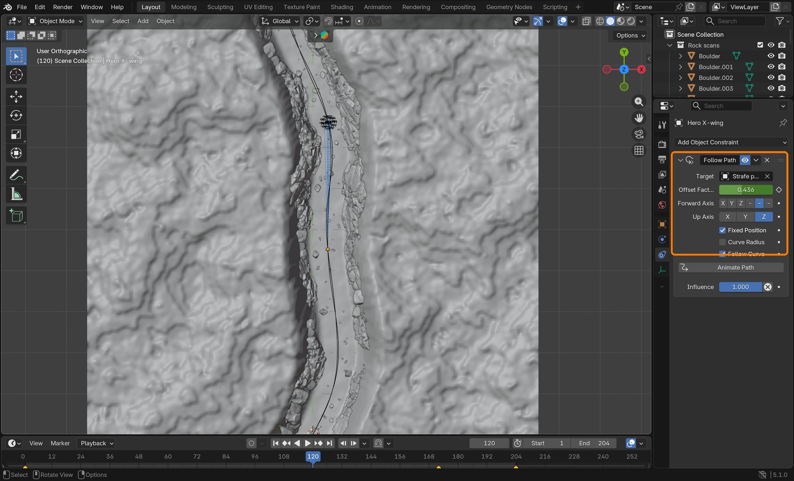
Box: Follow Path on Strafe path, Offset Factor keyed.
What went wrong when we built the demo: we first set the pass by calculation and the ship arrived 20 frames early, because a curve’s Offset Factor is not evenly spaced along its length. Scrubbing until it is overhead and keying that is more reliable.
STEP CHECKLIST
GLOSSARY
Strafe: Attack ground targets from a low-flying aircraft
WHYThe ship has to arrive just after the last hit (frame 164), so the audience sees the damage and then the ship that did it.
CHECKThe fighter grows from a dot and passes over the barricade at frame 172.
FIXPasses too early or late? Scrub to 172, move the Offset Factor until it is overhead, and key it again.
WORKED EXAMPLE · DIFFERENT OBJECTA drone fly-by or a car passing camera is timed with the same three keys.
STRETCH (AFTER THE CHECK PASSES)Add a slight roll: Tilt of 10° on the path points just after the squad.
Method basis: B3. Values and sequence are authored for this project.
08
Put the camera with the squad
IN SHORTCamera low behind the squad, 24 mm; Track To an empty; key the empty: canyon, squad, hold, then follow the ship.
READ ALOUD
DOCUMENT: strafe_YOURNAME.blend SELECT: Camera and a new empty TOOLS / ROUTE: Shift+A › Empty · Track To · I over Location
Move the Camera to 9.5 m behind the mark, 2 m to one side, 1.6 m off the ground. Lens 24 mm.
Add an Empty named Camera aim. Camera › Constraints › Track To: Target Camera aim, Track −Z, Up Y.
Key Camera aim’s Location: frame 1, far down the canyon (60 m ahead, 9 m up); frame 120, 40 m ahead, 7 m up; frame 140, at the squad, 1.6 m up; frame 172, still at the squad.
From frame 182 to 204, every 4 frames, snap Camera aim to the X-wing (select the ship, Shift+S › Cursor to Selected; select the aim, Shift+S › Selection to Cursor) and key it.
Numpad 0 and play.
Action by action: what to click (orange boxes), and what you should see
1Through the camera before the attack, with its Track To constraint.
Click
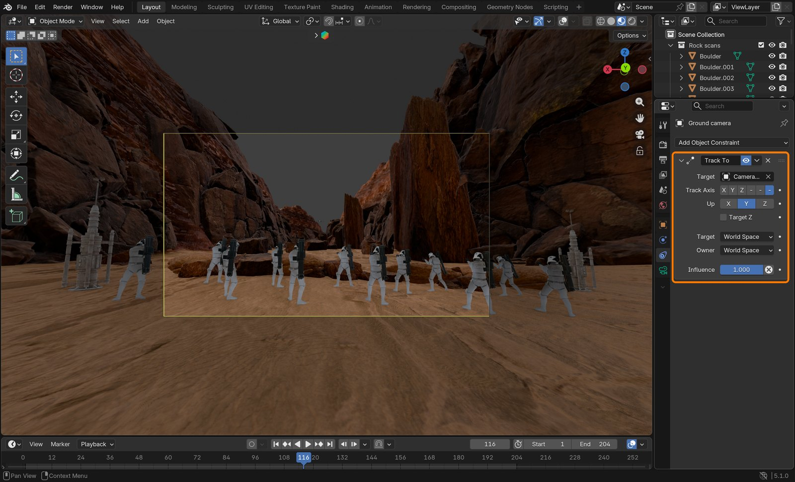
Box: Track To, Target Camera aim.
STEP CHECKLIST
GLOSSARY
Whip pan: A very fast camera turn
WHYAiming the camera at an empty lets you decide what the audience looks at on every frame, independently of the ship.
CHECKThe camera looks down the canyon, settles on the squad before the first hit, holds through the hits, then whips up after the ship.
FIXThe hits are off-screen? The aim left the squad too early: move the “at the squad” keys.
WORKED EXAMPLE · DIFFERENT OBJECTAny “react, then follow” shot works this way.
STRETCH (AFTER THE CHECK PASSES)Add a 2 cm camera shake on the hit frames with a Noise modifier on the aim’s Z.
Method basis: B3. Values and sequence are authored for this project.
09
Both sides open fire
IN SHORTStrafe aim keyed across the hit troopers; red emitter on the ship tracking it, fired 132–164; green emitters on five troopers tracking the ship.
Install PewPew_classroom.zip if it is not already (Preferences › Add-ons › Install from Disk).
Add an Empty Strafe aim. Key its Location so it sits on each hit trooper 6 frames before that trooper’s hit frame (140, 143, … 158), starting 16 frames earlier just in front of the barricade.
PewPew › Add Emitter XW_strafe, colour red, Speed 17.5, Life 22, size 1.6, 16, 1.6, Detect Collision on. Parent it to Hero X-wing at 0, −7.5, −0.3. Add Damped Track: Target Strafe aim, −Y.
Fire it every 2 frames from 132 to 164 (go to the frame, Pew!).
Return fire: add an emitter at the muzzle of five front-row troopers (green, size 0.5, 5, 0.5, Collision off) with Damped Track on Hero X-wing. Fire each about every 11 frames from frame 14 until that trooper is hit.
Action by action: what to click (orange boxes), and what you should see
1The red emitter at the X-wing’s nose, aimed by Damped Track.
Click
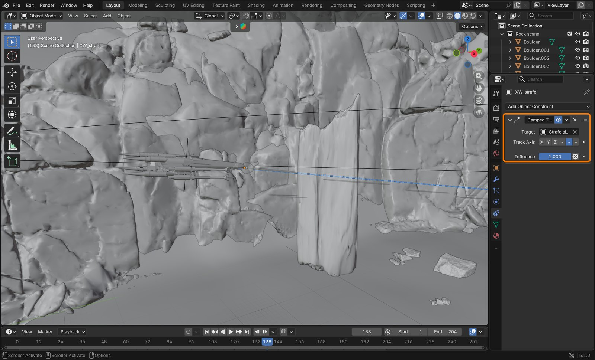
Box: Damped Track, Target Strafe aim, Track Axis −Y. The dotted blue line shows where it points.
STEP CHECKLIST
GLOSSARY
Damped Track: Keeps one axis pointed at a target
WHYThe moving aim empty walks the red bolts across the squad, so each bolt lands where a trooper is about to fall.
CHECKGreen bolts climb toward the distant ship for six seconds; then a stream of red bolts walks across the barricade.
FIXRed bolts land in front of the wall? Raise Strafe aim to chest height (about 0.9 m above the ground).
WORKED EXAMPLE · DIFFERENT OBJECTTracer fire from a helicopter door gun is done the same way.
STRETCH (AFTER THE CHECK PASSES)Have one green bolt hit the ship at frame 120 (Collision on for that shot).
Method basis: P1 · B3. Values and sequence are authored for this project.
10
Blast each hit: thrown trooper, debris, flash
IN SHORTPer hit: three Location keys on the trooper; flash 0 → 9,000 → 0; 8–12 debris rocks on arcs; throw the nearest wall rocks.
READ ALOUD
DOCUMENT: strafe_YOURNAME.blend SELECT: One hit at a time TOOLS / ROUTE: I over Location · Shift+D · Light › Power
Throw the trooper. Select the hit trooper’s armature. At its hit frame press I on Location. Six frames later move it 2 m back and 1.5–2 m up, key. Seven frames after that, 3–5 m back on the ground, key.
Flash. Shift+A › Light › Point at the trooper’s feet, orange, Radius 1.5 m. Key Power: 0 the frame before, 9,000 W on the hit, 2,500 W four frames later, 0 at fourteen.
Debris. Duplicate a boulder, scale it to 10–30 cm. Key Scale 0 the frame before the hit and its real scale on the hit. Key its Location on an arc: up 3–5 m by frame +10, landing 4–8 m away by about +30. Add Rotation keys so it tumbles. Make 8–12 per blast.
Barricade. For the two wall rocks nearest the hit: key Location and Rotation the frame before, then throw them 3–6 m back on a lower arc.
Repeat for all seven hits. It is the same recipe each time; work in pairs and split the hits.
Action by action: what to click (orange boxes), and what you should see
1A hit trooper six frames after the blast: Location keyed, up and back.
Click
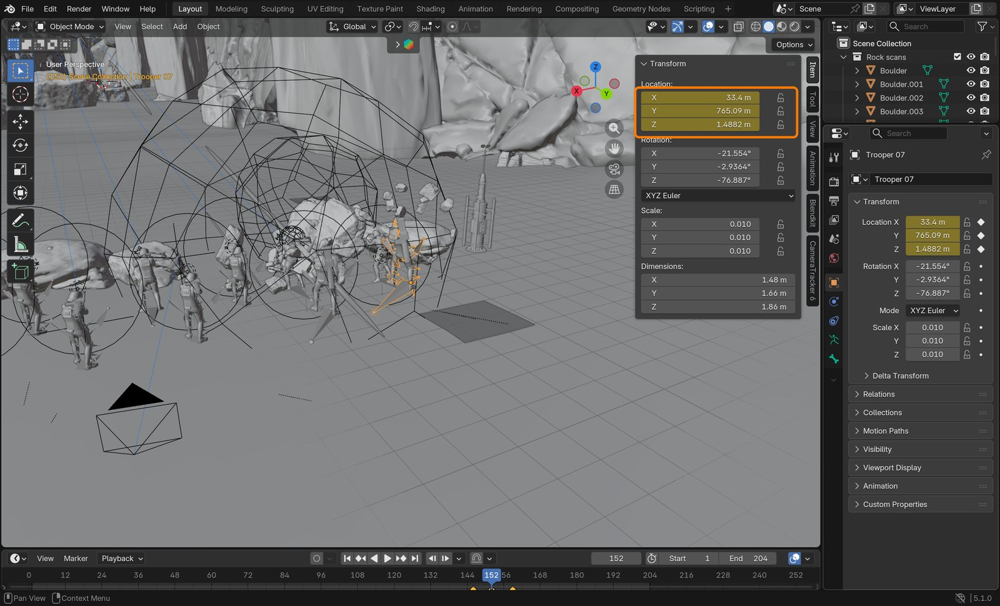
Box: the keyed Location (yellow).
2One debris rock on its arc.
Click
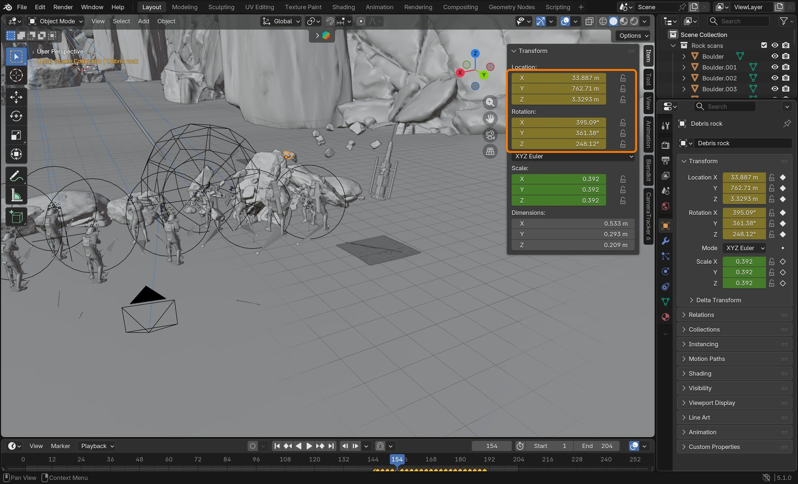
Box: keyed Location, Rotation and Scale.
3The flash light on the hit frame.
Click
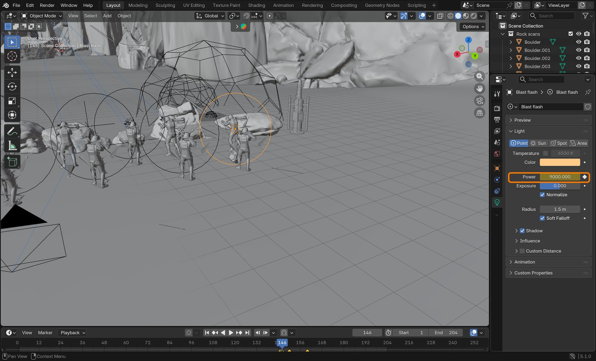
Box: Power 9,000 W, keyed.It should look like this
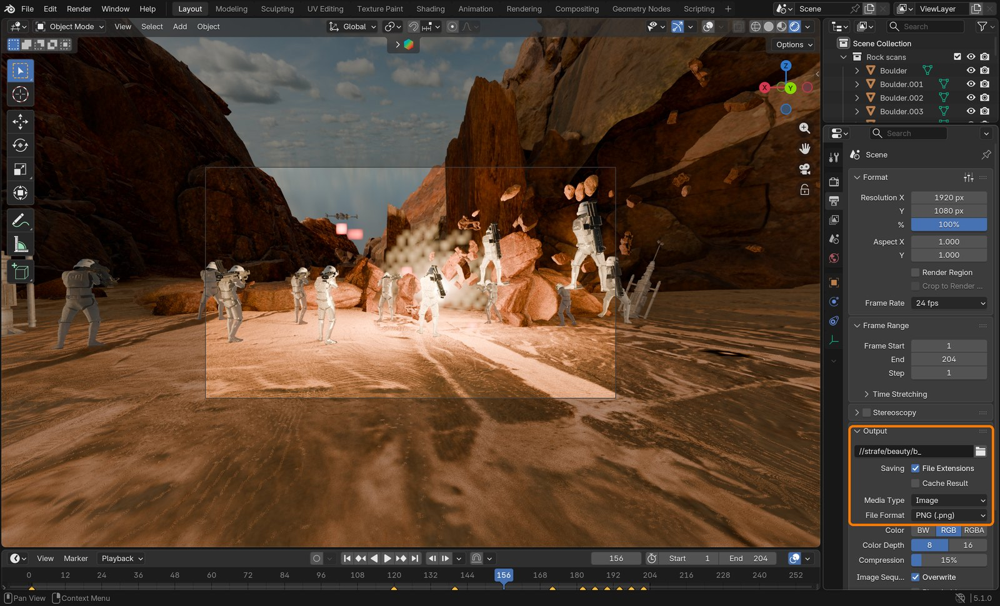
Rendered view ten frames into the attack: flash, thrown troopers, flying rock.
Object
Setting
Value
Thrown trooper
keys
hit, +6 (up 1.5–2 m), +13 (3–5 m back, on the ground)
Blast flash
Power
0 → 9,000 W → 2,500 W → 0
Debris
per blast
8–12 rocks, 10–30 cm
What went wrong when we built the demo: in the demo these keys were made by a script that repeated the recipe for all seven hits and calculated the arcs. By hand, expect one blast to take 10–15 minutes; that is why the step suggests splitting them.
STEP CHECKLIST
GLOSSARY
Arc: The curved path of something thrown
Power: Light brightness in watts
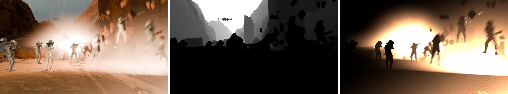
A blast frame as three passes: beauty, mist, and lights-off glow (rendered next lesson).
WHYThe flash sells the energy, the thrown body sells the force, and the debris sells the material. Three frames between hits makes them read as a strafe, not seven separate bangs.
CHECKFrom frame 146 the blasts walk across the barricade: a flash, a trooper in the air, rock flying toward the camera.
FIXWhole frame goes white on a hit? The flash Power is too high: our first version used 250,000 W and bleached everything.
WORKED EXAMPLE · DIFFERENT OBJECTA car hit by a missile or a door kicked in uses the same three ingredients.
STRETCH (AFTER THE CHECK PASSES)Use Object › Quick Effects › Cell Fracture on two wall rocks so they shatter into pieces before you throw them.
Method basis: B3. Values and sequence are authored for this project.
Session D · Lesson 4 · After Effects
Fire, dirt and the director.
Render three passes, lay real dirt and fire on each hit, then make the director’s change.
Why does the camera aim at an empty and not at the ship?
What are the three Blender ingredients of a blast?
How many frames apart are the hits, and why not all at once?
Say or write your answers, then check them against your file.
IN SHORTThree passes; haze and glow; a dirt charge keyed to each hit and masked; a short fireball in Screen; duplicate for seven hits; finish and render.
READ ALOUD
DOCUMENT: strafe_YOURNAME.blend → After Effects SELECT: beauty, mist and glow passes; Dirt Charge and Charge clips TOOLS / ROUTE: Render Animation ×3 · Import · Position and Scale keys · Mode · Mask
Render the three passes exactly as in Canyon Dogfight steps 9–10, into strafe/beauty, strafe/mist, strafe/glow (204 frames each).
After Effects: import the three sequences at 24 fps, make the comp from the beauty pass, add the Haze solid with the mist pass as a Luma matte (30%), and the two glow layers in Add (blur 8 at 45%, blur 40 at 22%).
Import Dirt_Charge_01, _05, _09 and Charge_01. For the first hit: drag a Dirt Charge in, start it 2 frames before the hit frame, set its Anchor Point to the base of the dirt (600, 630), then key Position on the blast and Scale so the column is about twice a trooper’s height.
Draw a rectangle mask on the dirt layer that cuts off the clip’s own ground (Feather 14). Add Charge_01 on top: Mode Screen, 70%, same position, 22 frames long.
Repeat for the other six hits (Ctrl+D the pair, slide 3 frames later, move to the next blast). Add the Grade, Vignette and Letterbox layers, then render H.264.
Action by action: what to click (orange boxes), and what you should see
1A dirt-charge layer selected, with Position and Scale keyed.
Click
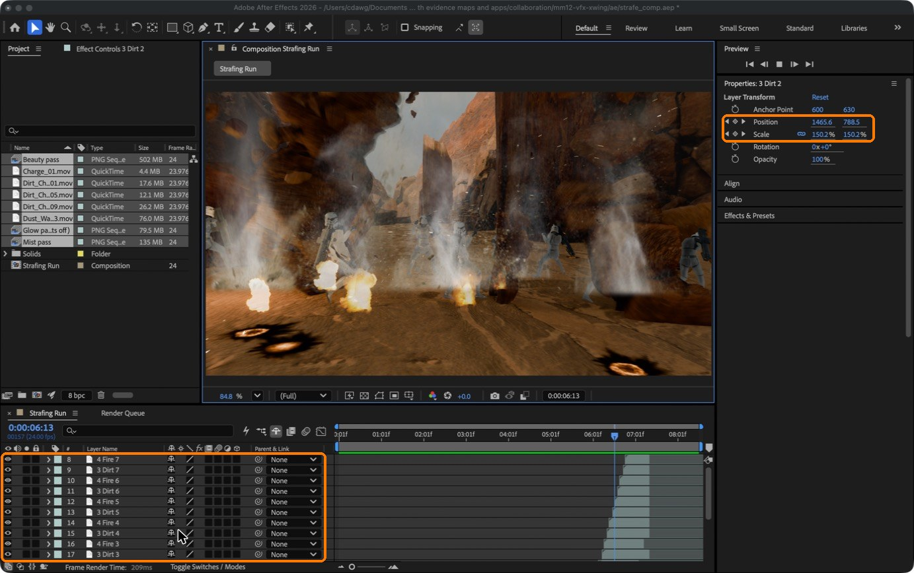
Boxes: the keyed Position and Scale, and the dirt and fire layers in the timeline.It should look like this
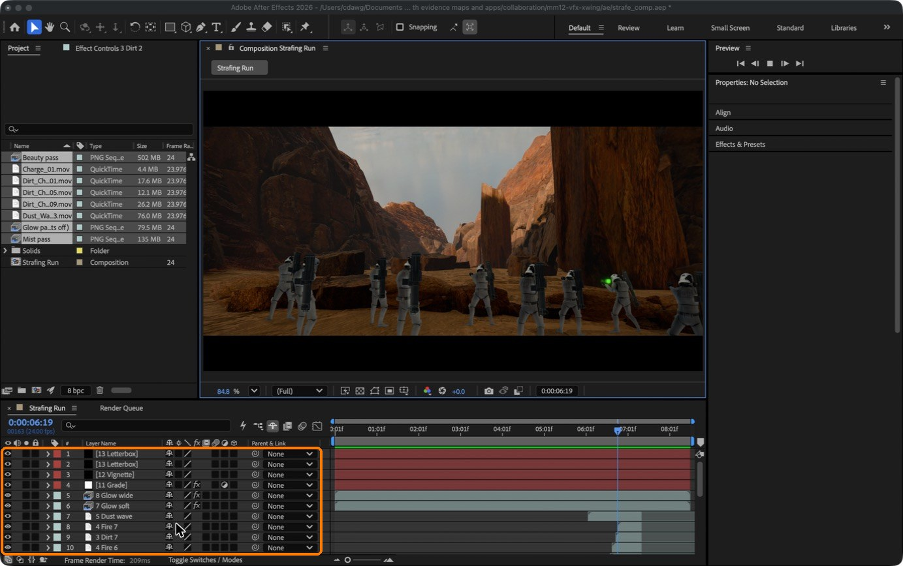
The finished stack (box): beauty at the bottom; dirt and fire pairs; dust wave; glow; grade; vignette; letterbox.
What went wrong when we built the demo: the clips were positioned in the demo by a script that read each blast’s screen position from Blender. By hand, place the clip on the hit frame and add a key every few frames only if the camera moves.
STEP CHECKLIST
GLOSSARY
Anchor Point: The point a layer scales and moves from
Mask: A shape that hides part of a layer
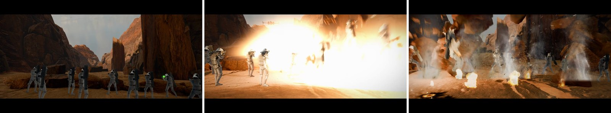
Three frames of the finished demo.
WHYFilmed dirt and fire carry the detail no quick 3D effect can. Position, scale and timing are what make a flat clip belong to a 3D blast.
CHECKEach hit has a dirt column and a short fireball sitting on it; nothing floats, and no clip shows a straight edge.
FIXA strip of grey ground under the dirt? Mask it off. Fire looks pasted on? It is too big: our first try used clips three times too large and the frame went white.
WORKED EXAMPLE · DIFFERENT OBJECTBullet hits, footsteps in dust and splashes are added with the same clips.
STRETCH (AFTER THE CHECK PASSES)Add Dust_Wave_03 once at the first hit, 40% opacity, spread across the ground.
Method basis: A1 · V1. Values and sequence are authored for this project.
12
Practical check: the director’s change
IN SHORTRead the card; decide the layer; change copies; render; explain three decisions; credit.
READ ALOUD
DOCUMENT: Copies of your Blender and After Effects files SELECT: Whatever the card requires TOOLS / ROUTE: Your own decisions
Read your director’s card (below). Decide what has to change: characters, strips, the attack, or only the composite.
Work in copies. Re-render only the passes that change.
Render the new MP4. Keep the original too.
Screen both. Explain one performance decision (strips), one timing decision and one compositing decision.
Credit the character’s artist and licence, Mixamo, the models, the stock footage and the add-on.
Card
The director says
1 · Survivors
“Too grim. Only two fall; the rest dive for cover behind the rocks and one waves the others on.”
2 · Ambush
“They never see it coming. The squad is relaxed, talking, until the first blast.”
3 · Second pass
“Add four seconds: the fighter banks round and comes back from the other end.”
4 · Night raid
“Night. The only light is the blasts and the bolts.”
Independent evidence: the main achievement evidence for this tutorial.
STEP CHECKLIST
GLOSSARY
Director’s card: A change request you must deliver
WHYEach card changes a different layer of the shot. Knowing which layer is the skill.
CHECKA second MP4 that meets the card, with a three-decision explanation and full credits.
FIXStuck? Name the layer the card touches first. (Independent step: the Coach can explain tools but not decide your changes.)
WORKED EXAMPLENone today: this is independent evidence. Use the success criteria.
STRETCH (AFTER THE CHECK PASSES)Take two cards at once.
Method basis: B1 · A1. Values and sequence are authored for this project.
Before you submit
Student QA.
Evidence conversation
Keep it short and specific.
SENTENCE FRAMESMy character is ___ by ___, licence ___. · The squad looks alive because ___. · The camera ___ so that ___. · For the director’s card I changed ___ and re-rendered ___.
Sources and authorship
Method references.
S1 Sketchfab. Downloadable 3D models; check each model’s licence. https://sketchfab.com/
X1 Adobe Mixamo. Free auto-rigging and animations for humanoid characters (Adobe ID needed). https://www.mixamo.com/
V1 Video Copilot (Andrew Kramer). Star Pack models (free) and Action Essentials stock footage (licensed; your teacher supplies it). https://www.videocopilot.net/
Figures marked Illustration are drawn, not screenshots. Step values are starting points authored for this project. Draft for teacher review; not yet classroom-piloted.